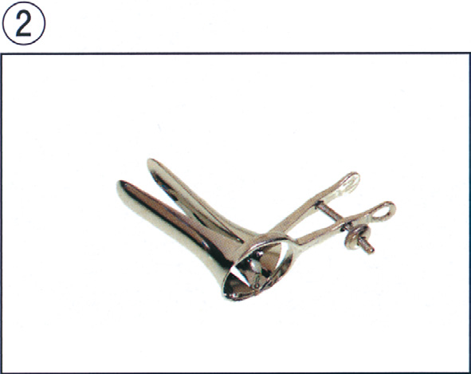
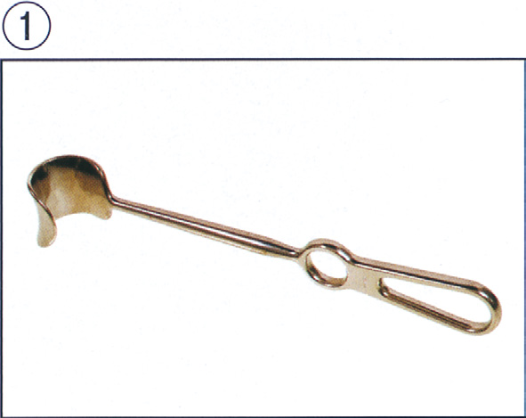
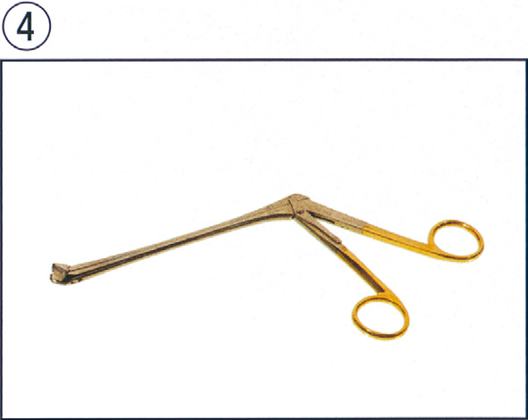
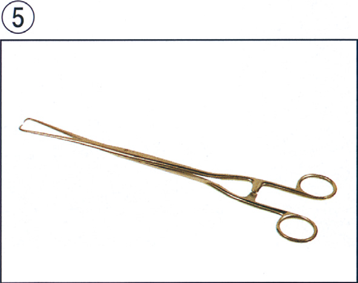
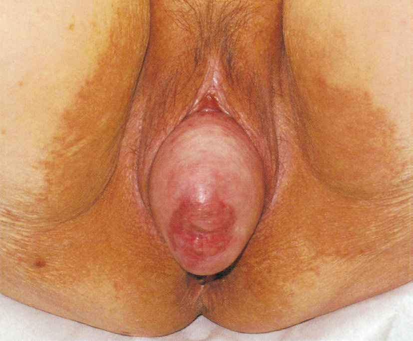
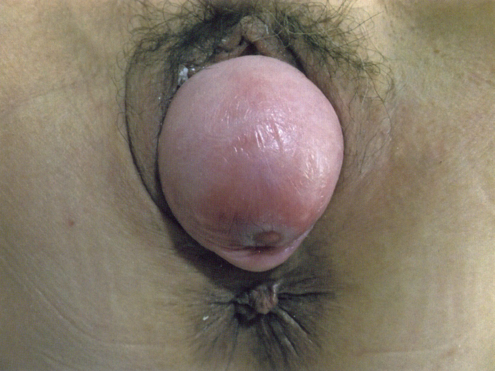
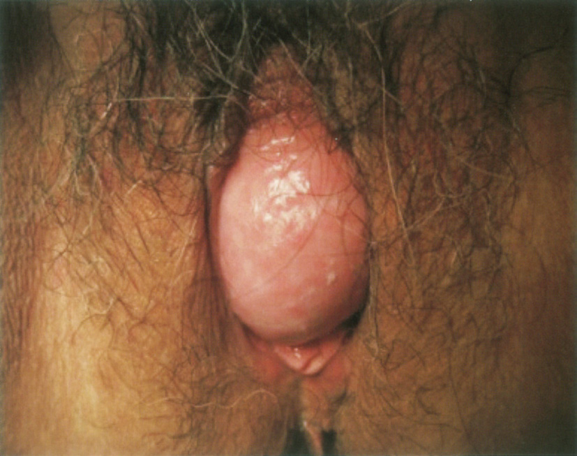

★
★ 必修問題
Q.1〜Q.12
Q.1(117B-24)★98%
月経は何を排出するために起きているか。
ａ 血 液
ｂ 頸管粘液
ｃ 子宮内膜
ｄ 腟分泌物
ｅ 卵管分泌物
✅
ｃ 子宮内膜
月経とは、妊娠が成立しなかった場合に肥厚した子宮内膜の機能層が剝脱・排出される現象である。
🩸 月経の定義
日本産科婦人科学会の定義では、月経は約1か月の間隔で起こり、限られた日数で自然に止まる子宮内膜からの周期的出血である。黄体が退縮しプロゲステロン・エストロゲンが急減すると、子宮内膜機能層のらせん動脈が攣縮して虚血壊死を起こし、機能層が剝脱して血液とともに排出される。出血（血液）はあくまで剝脱に伴う随伴現象であり、「排出しているもの」の主体は子宮内膜である。
□ 子宮内膜の層構造
| 層 | 月経時の挙動 |
|---|---|
| 緻密層・海綿層 （機能層） | エストロゲン・プロゲステロンに反応して増殖・分泌し、月経時に剝脱する |
| 基底層 | ホルモンに反応せず剝脱しない。月経後に機能層を再生する供給源 |
| 筋層（子宮筋層） | 剝脱しない。月経時は収縮して止血に働く（月経困難症の原因） |
🎯 国試ポイント
① 剝脱するのは機能層のみ、再生の母地は基底層。② 基底層まで傷害されると（掻爬・子宮内感染など）内膜が再生できず子宮腔癒着＝Asherman症候群となり、続発性無月経・不妊の原因となる。
③ 頸管粘液は排卵期に増加する分泌物、腟分泌物は自浄作用（Döderlein桿菌）に関わるもので、いずれも月経とは別現象。
Q.2(117E-3)★62%
女性の骨盤内炎症性疾患を最も示唆する身体所見はどれか。
ａ 帯下の悪臭
ｂ 脾臓の触知
ｃ 子宮口の開大
ｄ 下腹部腫瘤触知
ｅ Douglas 窩の圧痛
✅
ｅ Douglas 窩の圧痛
骨盤内炎症性疾患〈PID〉は付属器・骨盤腹膜の炎症であり、Douglas窩（直腸子宮窩）の圧痛が最も示唆的である。
🦠 骨盤内炎症性疾患〈PID〉とは
腟・頸管から上行性に細菌が波及し、子宮内膜炎・卵管炎・卵巣炎・骨盤腹膜炎を起こす病態。起炎菌はChlamydia trachomatis・淋菌が代表で、嫌気性菌との混合感染も多い。炎症が骨盤腹膜へ及ぶと、骨盤腔で最も低い位置にあるDouglas窩（直腸子宮窩）に膿・滲出液が貯留し、内診でここを圧迫すると強い圧痛を生じる。
□ 選択肢の検討
| 選択肢 | 示唆する病態 |
|---|---|
| ａ 帯下の悪臭 | 細菌性腟症に特徴的（アミン臭）。腟内の菌叢異常であり骨盤内炎症は示唆しない |
| ｂ 脾臓の触知 | 血液疾患・門脈圧亢進症などを示唆。PIDとは無関係 |
| ｃ 子宮口の開大 | 流産・切迫早産・頸管無力症を示唆 |
| ｄ 下腹部腫瘤触知 | 子宮筋腫・卵巣腫瘍・妊娠子宮などを示唆 |
| ｅ Douglas窩の圧痛 | 骨盤腹膜炎の存在を示す最も直接的な所見 |
🎯 国試ポイント
PIDの内診所見の3徴（CDCの最小診断基準）は子宮頸部可動時痛（頸部を動かすと痛い）・子宮圧痛・付属器圧痛。上腹部（右季肋部）痛を伴えば、肝周囲炎を合併したFitz-Hugh-Curtis症候群を考える（クラミジアが多い）。
未治療PIDは卵管閉塞・卵管性不妊・異所性妊娠のリスクを高める。
Q.3(116A-47)★41%
32 歳の女性。昨晩同意のない性行為を強要され、本日警察官に付き添われて受診した。警察官から被害状況の説明を受け、診察をすることになった。月経周期は28 日型、整、順。最終月経は12 日前から5 日間。
対応として適切でないのはどれか。
対応として適切でないのはどれか。
ａ 性感染症の検査を行う。
ｂ 緊急避妊薬を提案する。
ｃ 婦人科診察について本人の同意を得る。
ｄ DNA 診断のための検体を腟内から採取する。
ｅ 被害の状況を本人から再度聴き取って確認する。
✅
ｅ 被害の状況を本人から再度聴き取って確認する。
性暴力被害者への問診は必要最小限とし、被害状況の反復聴取は再トラウマ体験となるため避ける。
🚨 性暴力被害者への医療対応
医療機関の役割は、① 身体的損傷の診療、② 妊娠の防止（緊急避妊）、③ 性感染症の予防・検査、④ 証拠（法医学的検体）の採取、⑤ 精神的支援と関係機関（ワンストップ支援センター・警察）への橋渡しである。被害状況の詳細な事情聴取は司法（警察）の役割であり、医療者が繰り返し聴き取ることは再トラウマ体験（second rape）を招き、供述の変遷を生じさせるため行わない。本問では既に警察官から説明を受けており、本人への再聴取は不要である。
□ 選択肢の検討
| 選択肢 | 評価 |
|---|---|
| ａ 性感染症の検査を行う。 | 適切。淋菌・クラミジア・梅毒・HIV・B型肝炎などを検査し、予防内服も検討 |
| ｂ 緊急避妊薬を提案する。 | 適切。最終月経12日前＝排卵期にあたり妊娠リスクが高い。性交後72時間以内にLNG投与 |
| ｃ 婦人科診察について本人の同意を得る。 | 適切。警察の依頼があっても、診察・検体採取には本人の同意が必須 |
| ｄ DNA診断のための検体を腟内から採取する。 | 適切。加害者特定のための証拠採取（本人同意のうえで） |
| ｅ 被害の状況を本人から再度聴き取る。 | 不適切。反復聴取は再トラウマとなる。医療者は聴取の主体ではない |
🎯 国試ポイント
① 最終月経開始から12日目＝排卵期直前で妊娠しやすい時期。緊急避妊の適応判断に月経周期の情報が使われる。② 診療のキーワードは同意（インフォームド・コンセント）・証拠保全・二次被害の防止。
③ 性犯罪・性暴力被害者のためのワンストップ支援センターが全都道府県に設置されている。
Q.4(112A-65)★2択48%
68 歳の女性。4 回経産婦。外陰部の腫瘤感と歩行困難とを主訴に来院した。5 年前から夕方に腟入口部に径3cm の硬い腫瘤を触れるようになり指で還納していた。1 年前から還納しにくくなり、歩行に支障をきたすようになった。身長150cm、体重58kg。体温36.5℃。脈拍72/ 分、整。血圧134/88mmHg。呼吸数18/ 分。腹部は軽度膨満、軟で、腫瘤を触知しない。腹部超音波検査で子宮体部に異常を認めないが、子宮頸部は6cm に延長している。いきみによって、子宮腟部は下降して腟外に達する。血液生化学所見に異常を認めない。
対応として適切なのはどれか。2 つ選べ。
対応として適切なのはどれか。2 つ選べ。
ａ 手 術
ｂ 放射線照射
ｃ ペッサリー挿入
ｄ 抗コリン薬投与
ｅ 自己還納法指導
✅
ａ 手 術
ｃ ペッサリー挿入
骨盤臓器脱（子宮脱）でADLが障害されており、根治的な手術か、保存的治療としてのペッサリー挿入を選択する。
🩺 骨盤臓器脱〈POP〉／子宮脱
経産・加齢・肥満・慢性的な腹圧上昇により骨盤底筋群・基靱帯・仙骨子宮靱帯が脆弱化し、子宮・膀胱・直腸が腟壁とともに下降する疾患。本例は4回経産・子宮頸部6cmへの延長・いきみで子宮腟部が腟外に達するという所見から子宮脱と診断できる。「還納しにくくなり歩行に支障」＝QOL・ADLが障害された状態であり、治療の適応である。
□ 治療の選択
| 治療 | 内容 |
|---|---|
| 手術 | 根治的。腟式子宮全摘＋腟壁形成、腹腔鏡下仙骨腟固定術〈LSC〉、経腟メッシュ手術〈TVM〉など。ADL障害例・脱出が高度な例が適応 |
| ペッサリー挿入 | リング状の器具を腟内に留置して脱出を防ぐ保存的治療。手術を望まない例・全身状態不良例に適する。びらん・帯下増加・感染を生じうるため定期交換が必要 |
| 骨盤底筋訓練 | 軽症例（下垂〜Ⅰ度）に有効だが、本例のような高度脱出では効果が乏しい |
□ 誤答選択肢の根拠
| 選択肢 | 根拠 |
|---|---|
| ｂ 放射線照射 | 悪性腫瘍の治療法であり、良性の支持組織脆弱化には無効。むしろ組織障害を招く |
| ｄ 抗コリン薬投与 | 過活動膀胱の治療薬。臓器脱そのものは改善せず、尿閉を悪化させうる |
| ｅ 自己還納法指導 | 5年間行ってきたが1年前から還納困難となり無効。現時点の治療にはならない |
🎯 国試ポイント
子宮脱の重症度分類：子宮下垂（腟内にとどまる）→ 不全子宮脱（子宮腟部が腟外へ）→ 全子宮脱（子宮全体が脱出）。合併しやすいのは膀胱瘤（腟前壁）・直腸瘤（腟後壁）で、排尿困難・残尿・便秘の原因となる。
Q.5(112D-2)★95%
月経周期の12 日目に性交があった女性が緊急避妊の目的でホルモン薬を内服する場合、適切な服用時期に含まれるのはどれか。
ａ 性交後1 日目
ｂ 予定月経の1 日前
ｃ 基礎体温上昇後5 日目
ｄ 予定月経が3 日遅れた日
ｅ 妊娠反応が陽性になった日
✅
ａ 性交後1 日目
緊急避妊薬（レボノルゲストレル）は性交後72時間以内、できるだけ早く単回内服する。
💊 緊急避妊薬〈EC〉
本邦ではレボノルゲストレル〈LNG〉1.5mgを性交後72時間以内に単回内服する。内服が早いほど妊娠阻止率が高い。主な作用機序は排卵の抑制・遅延であり、着床阻害や妊娠の中絶（人工妊娠中絶）とは異なる。すでに着床が成立した妊娠には無効で、催奇形性もない。
□ 選択肢の検討
| 選択肢 | 評価 |
|---|---|
| ａ 性交後1 日目 | 適切。72時間以内であり最も効果が高い時期 |
| ｂ 予定月経の1 日前 | 約2週間後であり、排卵・受精・着床がすでに完了しうる |
| ｃ 基礎体温上昇後5 日目 | 排卵後5日＝黄体期。排卵抑制の余地がない |
| ｄ 予定月経が3 日遅れた日 | 妊娠成立後の可能性が高く無効 |
| ｅ 妊娠反応が陽性になった日 | 妊娠が成立している。緊急避妊の対象外 |
🎯 国試ポイント
① 月経周期28日型なら排卵は14日目前後。12日目の性交は最も妊娠しやすいタイミングで、緊急避妊の適応。② 精子の腟内生存期間は約3〜5日、卵子の受精能は排卵後約24時間。
③ 銅付加子宮内避妊具〈IUD〉の緊急挿入（性交後120時間以内）も海外では選択肢となる。
Q.6(111H-18)★📷 画像89%
器具の写真（①～⑤）を示す。
婦人科外来の診察で用いない器具はどれか。
婦人科外来の診察で用いない器具はどれか。





ａ ①
ｂ ②
ｃ ③
ｄ ④
ｅ ⑤
✅
ａ ①
婦人科外来の基本器具（腟鏡・ゾンデ・頸管拡張器・キューレット・細胞診採取器具）に含まれないものを選ぶ。
📸 婦人科外来で用いる代表的な器具
実際の写真は参照できないため、外来で日常的に用いる器具を整理する。① クスコ式腟鏡（腟鏡診）：腟壁を開いて子宮腟部を視診する。最も基本的な器具
② 子宮ゾンデ：子宮腔の長さ・方向を測る細い金属棒
③ ヘガール頸管拡張器：子宮頸管を段階的に拡張する
④ キューレット（鋭匙）：子宮内膜の掻爬・組織診
⑤ サイトブラシ・綿棒・ヘラ：子宮頸部細胞診の採取
このほかマルチン単鉤鉗子（子宮腟部の把持）、コルポスコープ（拡大鏡）を用いる。
□ 婦人科では用いない器具の例
| 器具 | 本来の使用科 |
|---|---|
| 直腸鏡・肛門鏡 | 消化器外科・肛門科で使用 |
| 喉頭鏡・耳鏡・鼻鏡 | 耳鼻咽喉科・麻酔科で使用 |
| 開創器（腹部手術用） | 手術室で使用し外来診察には用いない |
🎯 国試ポイント
器具の写真問題は形状と用途をセットで覚えることが要点。クスコ式腟鏡は上下2枚のブレードが開閉する形状、ヘガール拡張器は太さが段階的に異なる金属棒のセット、子宮ゾンデは目盛りのついた細い棒、と外観で区別できるようにしておく。
Q.7(107I-70)★📷 画像58%
72 歳の5 回経妊5 回経産婦。数年前から持続する外陰部違和感を主訴に来院した。外陰部の写真を示す。
この疾患の症状でないのはどれか。
この疾患の症状でないのはどれか。

ａ 頻 尿
ｂ 尿失禁
ｃ 帯下増加
ｄ 性器出血
ｅ 鼠径部痛
✅
ｅ 鼠径部痛
5回経産・高齢・外陰部の持続する違和感から骨盤臓器脱（子宮脱）であり、鼠径部痛は生じない。
📸 骨盤臓器脱の外陰部所見
写真では腟口から球状に脱出したピンク色〜白色の腫瘤が認められる。脱出した子宮腟部の中央には外子宮口が確認でき、下着との摩擦で表面にびらん・潰瘍（decubitus ulcer）を伴うことが多い。腟前壁が膨隆していれば膀胱瘤、後壁なら直腸瘤の合併を示す。
□ 骨盤臓器脱の症状
| 選択肢 | 評価 |
|---|---|
| ａ 頻尿 | あり。膀胱瘤の合併・残尿による |
| ｂ 尿失禁 | あり。腹圧性尿失禁を高率に合併 |
| ｃ 帯下増加 | あり。脱出粘膜のびらん・感染による |
| ｄ 性器出血 | あり。擦過による接触出血・褥瘡性潰瘍から |
| ｅ 鼠径部痛 | なし。鼠径部痛は鼠径ヘルニア・股関節疾患・リンパ節炎の症状。骨盤臓器脱では下腹部・腰部の下垂感（牽引痛）はあるが鼠径部痛は典型的でない |
🎯 国試ポイント
骨盤臓器脱の典型症状は腟外への腫瘤脱出感・下垂感・排尿障害（頻尿・残尿・尿失禁・尿閉）・排便障害・帯下増加・接触出血。「立位や夕方に悪化し、臥位で軽快（還納される）」というのが特徴的な病歴。
Q.8(106G-19)★97%
女性の骨盤内解剖で正しいのはどれか。
ａ 尿管は腹腔内を走行する。
ｂ 卵巣動脈は腎動脈から分岐する。
ｃ 子宮円索は基靱帯の一部を構成する。
ｄ 子宮動脈は内腸骨動脈から分岐する。
ｅ Douglas 窩とは子宮と膀胱の間を指す。
✅
ｄ 子宮動脈は内腸骨動脈から分岐する。
子宮動脈は内腸骨動脈前枝の分枝で、基靱帯内を走行して尿管の前方（上方）を横切る。
🩸 骨盤内の動脈支配
子宮動脈：内腸骨動脈前枝から分岐 → 基靱帯（横頸靱帯）内を内側へ走り、内子宮口の高さで尿管の前上方を交差（water under the bridge）して子宮側縁に達する。卵巣動脈：腹部大動脈から直接分岐（腎動脈のすぐ下）→ 骨盤漏斗靱帯（卵巣提索）内を下行して卵巣に至る。
両者は子宮角付近で吻合する。
□ 選択肢の検討
| 選択肢 | 評価 |
|---|---|
| ａ 尿管は腹腔内を走行する。 | 誤り。尿管は後腹膜腔を走行する |
| ｂ 卵巣動脈は腎動脈から分岐する。 | 誤り。腹部大動脈から直接分岐する（腎動脈起始部のすぐ下） |
| ｃ 子宮円索は基靱帯の一部を構成する。 | 誤り。子宮円索（円靱帯）は子宮角から鼠径管を通り大陰唇に至る独立した索状物 |
| ｄ 子宮動脈は内腸骨動脈から分岐する。 | 正しい |
| ｅ Douglas窩とは子宮と膀胱の間を指す。 | 誤り。Douglas窩は子宮と直腸の間（直腸子宮窩）。子宮と膀胱の間は膀胱子宮窩 |
💡 覚え方
「尿管の上を水が流れる」＝Water（子宮動脈）under the bridge（尿管の上）ではなく、正しくはwater（尿管）under the bridge（子宮動脈）。すなわち子宮動脈が橋、尿管が下を流れる水。子宮全摘時の尿管損傷はこの交差部で起こる。Q.9(105G-34)★2択33%
成人女性の骨盤内解剖所見で正しいのはどれか。2 つ選べ。
ａ 子宮動脈は仙骨子宮靱帯の中を走る。
ｂ 子宮動脈は内腸骨動脈から分岐する。
ｃ 卵管間質部の長さは4 ～5cm である。
ｄ 卵管壁は内膜と外膜との2 層からなる。
ｅ 卵巣動・静脈は骨盤漏斗靱帯の中を走る。
✅
ｂ 子宮動脈は内腸骨動脈から分岐する。
ｅ 卵巣動・静脈は骨盤漏斗靱帯の中を走る。
子宮動脈は内腸骨動脈から分岐して基靱帯内を走り、卵巣動静脈は骨盤漏斗靱帯（卵巣提索）内を走る。
🧬 骨盤内支持組織と走行する血管
基靱帯（横頸靱帯・Mackenrodt靱帯）：子宮頸部を骨盤側壁に固定。内部を子宮動静脈が走る。骨盤漏斗靱帯（卵巣提索）：卵巣を骨盤側壁に固定。内部を卵巣動静脈が走る。付属器切除の際にはこの靱帯を結紮切離する。
仙骨子宮靱帯：子宮頸部を仙骨へ牽引。血管は走らない（子宮内膜症の好発部位）。
固有卵巣索・子宮円索：血管の主幹は走行しない。
□ 選択肢の検討
| 選択肢 | 評価 |
|---|---|
| ａ 子宮動脈は仙骨子宮靱帯の中を走る。 | 誤り。子宮動脈が走るのは基靱帯 |
| ｂ 子宮動脈は内腸骨動脈から分岐する。 | 正しい。内腸骨動脈前枝から分岐 |
| ｃ 卵管間質部の長さは4 ～5cm である。 | 誤り。卵管全長が約10cmで、間質部（子宮壁内部）は約1cmと最も短い。4〜5cmあるのは膨大部 |
| ｄ 卵管壁は内膜と外膜との2 層からなる。 | 誤り。卵管壁は粘膜（内膜）・筋層・漿膜（外膜）の3層 |
| ｅ 卵巣動・静脈は骨盤漏斗靱帯の中を走る。 | 正しい |
□ 卵管の4部（子宮側→腹腔側）
| 部位 | 長さ | 特徴 |
|---|---|---|
| 間質部（子宮部） | 約1cm | 子宮筋層内を貫通する最狭部 |
| 峡部 | 約3〜4cm | 細く筋層が厚い |
| 膨大部 | 約4〜5cm | 受精の場。最も太く長い。異所性妊娠の好発部位 |
| 采部（漏斗部） | 約1〜2cm | 卵管采で卵子を捕捉（pick-up） |
🎯 国試ポイント
異所性妊娠の約95%は卵管妊娠で、そのうち最多は膨大部。卵巣静脈の還流は左右非対称で、右は下大静脈へ直接、左は左腎静脈へ注ぐ（精巣静脈と同じ）。
Q.10(104C-8)★99%
婦人科診察時の双合診で正しいのはどれか。
ａ 腟鏡診の前に行う。
ｂ 膀胱を充満して行う。
ｃ 正常な卵巣は鵞卵大に触れる。
ｄ 正常な子宮は手拳大に触れる。
ｅ 内診指と腹壁上の外診手とで触診する。
✅
ｅ 内診指と腹壁上の外診手とで触診する。
双合診は腟内に挿入した内診指と腹壁上の外診手で骨盤内臓器を挟むように触診する手技である。
🖐 双合診〈bimanual examination〉
一方の手の示指・中指を腟内に挿入し、他方の手で下腹部を圧迫して、内診指と外診手で子宮・付属器を挟み込むように触知する。子宮の大きさ・硬さ・可動性・前後傾屈、付属器腫瘤の有無、Douglas窩の圧痛や膨隆を評価する。
順序は視診 → 腟鏡診 → 双合診。腟鏡診を先に行うのは、内診指で分泌物や細胞を撹乱すると細胞診・培養検体の質が落ちるためである。
□ 選択肢の検討
| 選択肢 | 評価 |
|---|---|
| ａ 腟鏡診の前に行う。 | 誤り。腟鏡診（視診・細胞診・培養採取）の後に行う |
| ｂ 膀胱を充満して行う。 | 誤り。排尿後（膀胱を空にして）行う。充満膀胱は触診の妨げとなり苦痛も強い（経腹超音波では逆に充満が望ましい） |
| ｃ 正常な卵巣は鵞卵大に触れる。 | 誤り。正常卵巣は母指頭大（約3cm）。鵞卵大（がちょうの卵大＝約7cm）は明らかな腫大 |
| ｄ 正常な子宮は手拳大に触れる。 | 誤り。非妊時の正常子宮は鶏卵大（約7×5×3cm）。手拳大は妊娠2〜3か月大 |
| ｅ 内診指と腹壁上の外診手とで触診する。 | 正しい |
💡 覚え方：大きさの目安
正常卵巣＝母指頭大（拇指頭大）、正常子宮＝鶏卵大。妊娠子宮の大きさ：妊娠2か月＝鵞卵大、3か月＝手拳大、4か月＝小児頭大。
Q.11(98G-96)★2択
Müller 管に由来するのはどれか。2 つ選べ。
ａ 卵 巣
ｂ 卵 管
ｃ 子 宮
ｄ 腟前庭
ｅ 小陰唇
✅
ｂ 卵 管
ｃ 子 宮
Müller管（中腎傍管）は卵管・子宮・子宮頸部・腟上部1/3に分化する。
🧬 女性生殖器の発生
Müller管（中腎傍管） → 卵管・子宮・子宮頸部・腟上部1/3左右のMüller管が正中で癒合して子宮・頸部・腟上部を形成し、癒合しなかった頭側部分が卵管となる。癒合異常や中隔の吸収不全により重複子宮・双角子宮・中隔子宮などが生じる。
生殖隆起（性腺原基） → 卵巣
尿生殖洞 → 腟下部2/3・腟前庭・尿道・Bartholin腺
生殖結節 → 陰核 ／ 尿道ヒダ → 小陰唇 ／ 陰唇陰囊隆起 → 大陰唇
□ 選択肢の検討
| 選択肢 | 由来 |
|---|---|
| ａ 卵巣 | 生殖隆起由来（原始生殖細胞は卵黄囊由来） |
| ｂ 卵管 | Müller管由来（癒合しない頭側部分） |
| ｃ 子宮 | Müller管由来（左右が癒合した部分） |
| ｄ 腟前庭 | 尿生殖洞由来 |
| ｅ 小陰唇 | 尿道ヒダ由来 |
💡 覚え方
Müller管由来は「ラン・キュウ・チツジョウ」＝卵管・子宮（頸部含む）・腟上部1/3。男性ではMüller管は抗Müller管ホルモン〈AMH〉（Sertoli細胞分泌）により退縮し、Wolff管（中腎管）がテストステロンにより精巣上体・精管・精囊に分化する。
Q.12(97G-40)★
子宮内膜について正しいのはどれか。
ａ 緻密層は基底層に接する。
ｂ 基底層は周期性変化を示す。
ｃ 月経時には基底層が剝脱する。
ｄ 増殖期には核下空胞がみられる。
ｅ 分泌期には類脱落膜化がみられる。
✅
ｅ 分泌期には類脱落膜化がみられる。
分泌期後期の子宮内膜間質細胞は脱落膜様に変化（類脱落膜化）し、着床の準備が整う。
🩸 子宮内膜の周期的変化
増殖期（卵胞期）：エストロゲンにより腺・間質・血管が増殖。腺は直線状、細胞分裂像が多い。分泌期（黄体期）：プロゲステロンにより腺が蛇行・分泌亢進。
・分泌期初期＝核下空胞（subnuclear vacuole）が腺上皮に出現（プロゲステロン作用の最初の形態学的指標）
・分泌期後期＝間質細胞が大型・明るい胞体をもつ類脱落膜細胞（pre-decidual cell）へ変化＝類脱落膜化
着床が成立するとこの変化がさらに進み、真の脱落膜となる。
□ 選択肢の検討
| 選択肢 | 評価 |
|---|---|
| ａ 緻密層は基底層に接する。 | 誤り。内膜は表層から緻密層 → 海綿層 → 基底層の順。緻密層と基底層の間に海綿層がある |
| ｂ 基底層は周期性変化を示す。 | 誤り。周期性変化を示すのは機能層（緻密層＋海綿層）。基底層は変化せず再生源となる |
| ｃ 月経時には基底層が剝脱する。 | 誤り。剝脱するのは機能層。基底層まで失われるとAsherman症候群となる |
| ｄ 増殖期には核下空胞がみられる。 | 誤り。核下空胞は分泌期初期（排卵後2〜3日）の所見 |
| ｅ 分泌期には類脱落膜化がみられる。 | 正しい |
🎯 国試ポイント
着床の窓（implantation window）は排卵後6〜8日（分泌期中期）。子宮内膜日付診（dating）では、核下空胞＝排卵後2〜3日、腺分泌最大＝排卵後6〜7日、類脱落膜化＝排卵後9日以降が目安。
A
一般問題
Q.13〜Q.26
Q.13(117D-74)📷 画像93%
76 歳の女性（3 妊3 産）。大腿骨骨折のため入院中である。膀胱内留置カテーテルを抜去した翌日、外陰部の腫瘤を認めた。本人は1 年前から外陰部のしこりを自覚していたが、日常生活に支障がないため受診していなかったという。意識は晴明（編註：「清明」の誤記と思われる）。身長154cm、体重64kg。体温36.8℃。脈拍72/ 分、整。血圧126/74mmHg。呼吸数14/ 分。胸腹部の身体所見に異常を認めない。血液所見と血液生化学所見とに異常を認めない。診察時の外陰部写真を示す。
この患者に認めた場合、腫瘤の用手還納を急ぐのはどれか。
この患者に認めた場合、腫瘤の用手還納を急ぐのはどれか。

ａ 帯 下
ｂ 尿 閉
ｃ 外痔核
ｄ 尿失禁
ｅ 子宮腟部粘膜擦過傷
✅
ｂ 尿 閉
骨盤臓器脱による尿閉は上部尿路障害（水腎症・腎後性腎不全）を招くため、緊急に還納を要する。
📸 骨盤臓器脱の外陰部所見と本例の経過
写真では腟口から脱出した球状の腫瘤が確認される。腟前壁が主体に膨隆していれば膀胱瘤である。本例は1年前から自覚があったが無症候であり、大腿骨骨折による臥床とカテーテル留置・抜去を契機に脱出が顕在化した。高齢・多産・肥満（BMI 27）が背景因子。
□ なぜ「尿閉」が緊急なのか
| 選択肢 | 評価 |
|---|---|
| ｂ 尿閉 | 緊急。脱出により尿道が屈曲・閉塞 → 膀胱内圧上昇 → 両側水腎症・腎後性腎不全に至る。還納（＋導尿）を急ぐ |
| ａ 帯下 | 脱出粘膜のびらんに伴う症状。緊急性はない |
| ｃ 外痔核 | 直腸・肛門の疾患であり骨盤臓器脱の還納とは無関係 |
| ｄ 尿失禁 | 腹圧性尿失禁は頻度が高いが、上部尿路障害を来さず緊急性は低い |
| ｅ 子宮腟部粘膜擦過傷 | 褥瘡性潰瘍。処置は要するが緊急の還納適応ではない |
🎯 国試ポイント
骨盤臓器脱で緊急性が高いのは尿閉・水腎症・腎後性腎不全・嵌頓（還納不能で血流障害）。まず用手還納と導尿を行い、その後ペッサリーまたは手術を検討する。
Q.14(114D-27)📷 画像61%
71 歳の女性。排尿困難を主訴に来院した。1 年前から会陰部腫瘤を自覚していたが、自分で腫瘤を元に戻していたという。3 か月前から排尿困難が出現したため受診した。身長156cm、体重55kg。体温36.6℃。脈拍72/ 分、整。血圧132/72mmHg。血液所見：赤血球350 万、Hb 11.2g/dL、Ht 34％、白血球4,000、血小板25 万。血液生化学所見：尿素窒素23mg/dL、クレアチニン0.9mg/dL、Na 144mEq/L、K 4.2mEq/L、Cl 100mEq/L。CRP 0.7mg/dL。外陰部の写真を示す。
診断はどれか。
診断はどれか。

ａ 直腸脱
ｂ 膀胱瘤
ｃ 外陰Paget 病
ｄ 尿道カルンクル
ｅ 尖圭コンジローマ
✅
ｂ 膀胱瘤
高齢経産婦の還納可能な会陰部腫瘤＋排尿困難は、腟前壁が膨隆する膀胱瘤に典型的である。
📸 膀胱瘤〈cystocele〉の外陰部所見
写真では腟口から脱出する平滑・軟らかいピンク色の球状腫瘤を認め、腟前壁が膨隆している（子宮腟部は腫瘤の奥や後方にみえる）。膀胱瘤は腟前壁の支持組織（恥骨頸部筋膜）が脆弱化して膀胱が腟内へ下降した状態。脱出により尿道が屈曲するため排尿困難・残尿・尿閉を来す。「腫瘤を自分で元に戻していた（還納可能）」という病歴が臓器脱を強く示唆する。
□ 鑑別すべき外陰部腫瘤
| 疾患 | 所見 | 本例との対比 |
|---|---|---|
| 膀胱瘤 | 腟前壁の膨隆。軟らかく還納可能。排尿困難・残尿・尿失禁を伴う | 本例 |
| 直腸脱 | 肛門から突出。同心円状の粘膜ひだが特徴。排便障害を伴う | 部位が異なる |
| 外陰Paget病 | 外陰部の境界明瞭な紅斑・湿疹様病変。瘙痒を伴い還納できない | 腫瘤ではない |
| 尿道カルンクル | 外尿道口後縁の小さな（数mm〜1cm）赤色ポリープ状腫瘤。閉経後に多い | 小型で還納不能 |
| 尖圭コンジローマ | HPV6/11による乳頭状・鶏冠状の疣贅。多発性 | 形状が異なる |
🎯 国試ポイント
腟壁の膨隆部位で分類：腟前壁＝膀胱瘤・尿道瘤／腟後壁＝直腸瘤／Douglas窩＝小腸瘤（腟円蓋）。排尿困難があれば残尿測定を行い、尿閉・水腎症の有無を確認する。治療はペッサリーまたは手術。
Q.15(107E-11)81%
月経開始から次の月経開始までの血中ホルモン値の変動について誤っているのはどれか。
ａ プロゲステロンは増殖期より分泌期の方が高い。
ｂ プロゲステロンの上昇の後にFSH が上昇する。
ｃ エストラジオールは月経期より分泌期の方が高い。
ｄ エストラジオールの上昇の後にLH が上昇する。
ｅ エストラジオールの上昇の後にプロゲステロンが上昇する。
✅
ｂ プロゲステロンの上昇の後にFSH が上昇する。
FSHは黄体退縮によりプロゲステロン・エストロゲンが低下した後に上昇する（プロゲステロン上昇の後ではない）。
📈 1周期のホルモン変動
① 月経期〜卵胞期：黄体退縮でE2・Pが低下 → ネガティブフィードバックの解除によりFSHが上昇（intercycle FSH rise）→ 卵胞発育開始② 卵胞期後期：発育卵胞からE2が急増 → FSHは抑制（インヒビンBも関与）
③ 排卵期：E2が高値（≧200pg/mL）を約50時間持続 → ポジティブフィードバックでLHサージ（＋小さなFSHサージ）→ 約36時間後に排卵
④ 黄体期：黄体からP・E2が分泌されPが最高値。FSH・LHは強く抑制される
⑤ 妊娠不成立なら黄体退縮 → P・E2低下 → 月経＋FSH再上昇（①へ）
□ 選択肢の検討
| 選択肢 | 評価 |
|---|---|
| ａ プロゲステロンは増殖期より分泌期の方が高い。 | 正しい。Pは黄体（分泌期）から分泌される |
| ｂ プロゲステロンの上昇の後にFSH が上昇する。 | 誤り。FSHが上昇するのはプロゲステロンが低下（黄体退縮）した後。黄体期の高P下ではFSHは抑制されている |
| ｃ エストラジオールは月経期より分泌期の方が高い。 | 正しい。分泌期にはE2も second peak を示す |
| ｄ エストラジオールの上昇の後にLH が上昇する。 | 正しい。E2高値持続 → LHサージ（ポジティブフィードバック） |
| ｅ エストラジオールの上昇の後にプロゲステロンが上昇する。 | 正しい。排卵後の黄体化によりPが上昇する |
💡 覚え方
ゴナドトロピン（FSH・LH）は性ステロイドが低いときに上がるのが原則（ネガティブフィードバック）。唯一の例外が排卵直前のE2高値によるLHサージ（ポジティブフィードバック）。
Q.16(105F-12)88%
双合診の有用性が低い主訴はどれか。
ａ 下腹部痛
ｂ 過多月経
ｃ 続発性無月経
ｄ 不正性器出血
ｅ 外陰部瘙痒感
✅
ｅ 外陰部瘙痒感
外陰部瘙痒感は外陰の視診で評価すべき主訴であり、内診指で骨盤内臓器を触知する双合診の有用性は低い。
🖐 双合診で評価できること
双合診は子宮の大きさ・硬さ・可動性・圧痛、付属器腫瘤、Douglas窩の圧痛・膨隆を評価する手技で、骨盤内（腟より奥）の病態を対象とする。外陰部（腟入口より外側）の病変は、双合診では触れず視診で評価する。
□ 選択肢の検討
| 選択肢 | 評価 |
|---|---|
| ａ 下腹部痛 | 有用。付属器炎・卵巣腫瘍茎捻転・異所性妊娠・子宮内膜症の圧痛評価 |
| ｂ 過多月経 | 有用。子宮筋腫・子宮腺筋症による子宮腫大・硬度を評価 |
| ｃ 続発性無月経 | 有用。妊娠子宮の腫大、多囊胞性卵巣、腫瘍の有無を評価 |
| ｄ 不正性器出血 | 有用。子宮頸癌・体癌の子宮腫大や可動性低下（浸潤）の評価 |
| ｅ 外陰部瘙痒感 | 有用性が低い。カンジダ外陰炎・硬化性苔癬・外陰Paget病など外陰の視診（＋鏡検・生検）が診断の主体 |
🎯 国試ポイント
婦人科診察の使い分け：外陰部病変＝視診／腟・子宮腟部＝腟鏡診・コルポスコピィ／子宮体部・付属器＝双合診・経腟超音波。Q.17(104G-25)96%
腹部大動脈から分枝するのはどれか。
ａ 上膀胱動脈
ｂ 内腸骨動脈
ｃ 子宮動脈
ｄ 閉鎖動脈
ｅ 卵巣動脈
✅
ｅ 卵巣動脈
卵巣動脈は腹部大動脈から直接分岐する（他の4つはすべて内腸骨動脈系の分枝）。
🩸 骨盤の動脈系
腹部大動脈から直接分岐：卵巣動脈（腎動脈起始のすぐ下、L2レベル）、正中仙骨動脈内腸骨動脈 前枝：子宮動脈、上・下膀胱動脈、閉鎖動脈、内陰部動脈、下直腸動脈、臍動脈
内腸骨動脈 後枝：上殿動脈、腸腰動脈、外側仙骨動脈
卵巣が発生学的に腹腔内（腰部）で発生して骨盤内へ下降した臓器であるため、その血管も腹部大動脈から直接出て骨盤漏斗靱帯を通って下降する（精巣動脈と同じ）。
□ 選択肢の検討
| 選択肢 | 起始 |
|---|---|
| ａ 上膀胱動脈 | 内腸骨動脈前枝（臍動脈の遺残部から分岐） |
| ｂ 内腸骨動脈 | 総腸骨動脈から分岐 |
| ｃ 子宮動脈 | 内腸骨動脈前枝から分岐 |
| ｄ 閉鎖動脈 | 内腸骨動脈前枝から分岐 |
| ｅ 卵巣動脈 | 腹部大動脈から直接分岐 |
💡 覚え方
生殖腺の動脈は「発生した高さ」から出る。卵巣・精巣はともに腰部で発生 → 動脈は腹部大動脈（腎動脈直下）から。一方、静脈還流は右＝下大静脈へ直接、左＝腎静脈へ（左が長く圧が高い＝左に精索静脈瘤／卵巣静脈症候群が多い）。
Q.18(104I-56)78%
56 歳の女性。3 回経産。歩行時に腟から球のようなものが出てくることを主訴に来院した。既往歴と家族歴とに特記すべきことはない。外陰部の診察で腟前壁と子宮頸部とが腟口から球状に飛び出している。尿所見：蛋白（－）、糖（－）、沈渣に赤血球1 ～3/1 視野、白血球0 ～2/1 視野。
みられるのはどれか。
みられるのはどれか。
ａ 血 便
ｂ 性交痛
ｃ 排尿痛
ｄ 排尿困難
ｅ 不正出血
✅
ｄ 排尿困難
腟前壁（膀胱瘤）を伴う子宮脱では、尿道の屈曲により排尿困難・残尿を来す。
🩺 腟前壁の脱出＝膀胱瘤の合併
「腟前壁と子宮頸部が腟口から球状に飛び出す」＝膀胱瘤を伴う子宮脱（不全〜全子宮脱）。膀胱が下降すると膀胱尿道移行部が屈曲（kinking）し、排尿の際に尿の流出が妨げられて排尿困難・残尿感・尿線細小、進行すると尿閉を生じる。患者は腫瘤を押し戻して排尿することがある（splinting）。
□ 選択肢の検討
| 選択肢 | 評価 |
|---|---|
| ａ 血便 | 直腸・肛門疾患の症状。臓器脱では通常みられない |
| ｂ 性交痛 | 子宮内膜症・萎縮性腟炎などで生じる。臓器脱の主症状ではない |
| ｃ 排尿痛 | 膀胱炎・尿道炎の症状。本例は尿沈渣で白血球0〜2/HPFと膿尿がなく、感染は否定的 |
| ｄ 排尿困難 | 正しい。膀胱瘤による尿道の屈曲で生じる |
| ｅ 不正出血 | 脱出粘膜の褥瘡性潰瘍からの接触出血はありうるが、本例は尿沈渣で赤血球1〜3/HPFと軽微で、まず考える症状ではない |
🎯 国試ポイント
骨盤臓器脱に伴う排尿症状は二相性。軽症では腹圧性尿失禁（尿道の過可動）、高度脱出では排尿困難・残尿・尿閉（尿道の屈曲）。手術で脱出を整復すると、隠れていた腹圧性尿失禁が顕在化することがある（潜在性腹圧性尿失禁）。
Q.19(103C-12)85%
非妊女性の正常診察所見はどれか。
ａ 腟分泌物は淡緑色泡沫状である。
ｂ 子宮は後傾後屈である。
ｃ 子宮は鶏卵大に触れる。
ｄ 子宮頸部の可動性は体部に比べて良好である。
ｅ 卵巣はくるみ大に触れる。
✅
ｃ 子宮は鶏卵大に触れる。
非妊時の正常子宮は鶏卵大（約7×5×3cm）で、前傾前屈位をとる。
🖐 非妊女性の正常内診所見
子宮：鶏卵大（約7×5×3cm、重量約50g）、前傾前屈が正常（約80%）、可動性良好、圧痛なし卵巣：母指頭大（約3cm）。閉経後は萎縮し触知しないのが正常
腟分泌物：白色〜乳白色でさらさらし、Döderlein桿菌により酸性（pH 4前後）に保たれる
可動性：子宮体部は可動性良好、頸部は基靱帯・仙骨子宮靱帯で固定され可動性は体部より劣る
□ 選択肢の検討
| 選択肢 | 評価 |
|---|---|
| ａ 腟分泌物は淡緑色泡沫状である。 | 異常。Trichomonas腟炎に特徴的（悪臭・掻痒を伴う） |
| ｂ 子宮は後傾後屈である。 | 正常の亜型ではあるが約20%にとどまり、「正常所見」として選ぶべきは前傾前屈。癒着（子宮内膜症・PID後）でも生じる |
| ｃ 子宮は鶏卵大に触れる。 | 正常 |
| ｄ 子宮頸部の可動性は体部に比べて良好である。 | 誤り。頸部は靱帯で固定され体部より可動性は劣る |
| ｅ 卵巣はくるみ大に触れる。 | 異常。正常は母指頭大。くるみ大は腫大を示唆 |
💡 覚え方
大きさの階段：母指頭大（正常卵巣）＜ 鶏卵大（正常子宮）＜ 鵞卵大（妊娠2か月）＜ 手拳大（妊娠3か月）＜ 小児頭大（妊娠4か月）。Q.20(103G-28)84%
プロゲステロンの作用で正しいのはどれか。
ａ 卵胞刺激
ｂ 子宮筋収縮
ｃ 子宮頸管熟化
ｄ 子宮頸管粘液増加
ｅ 子宮内膜脱落膜化
✅
ｅ 子宮内膜脱落膜化
プロゲステロンは子宮内膜を分泌期へ導き、間質細胞を脱落膜化させて着床・妊娠維持に働く。
💊 プロゲステロンの主な作用
① 子宮内膜を分泌期内膜へ変化させ、間質を脱落膜化して着床に備える② 子宮筋の収縮を抑制（妊娠維持）。オキシトシン感受性を低下させる
③ 頸管粘液を少量・粘稠にして精子の通過を妨げる（避妊薬の作用機序の一つ）
④ 基礎体温を上昇させる（体温中枢に作用、高温相）
⑤ 乳腺の腺房を発育させる（エストロゲンは乳管を発育）
□ エストロゲン vs プロゲステロン
| 作用部位 | エストロゲン | プロゲステロン |
|---|---|---|
| 子宮内膜 | 増殖（増殖期） | 分泌・脱落膜化（分泌期） |
| 子宮筋 | 収縮性を高める | 収縮を抑制 |
| 頸管粘液 | 量↑・牽糸性↑・羊歯状結晶（＋） | 量↓・粘稠・羊歯状結晶（－） |
| 頸管の熟化 | 関与（プロスタグランジンとともに） | 熟化を抑制 |
| 基礎体温 | 変化なし（低温相） | 上昇（高温相） |
| ゴナドトロピン | 低値でFSH抑制／高値持続でLHサージ | GnRHパルス頻度を低下させLHを抑制 |
□ 選択肢の検討
| 選択肢 | 評価 |
|---|---|
| ａ 卵胞刺激 | FSHの作用。プロゲステロンはゴナドトロピンを抑制する |
| ｂ 子宮筋収縮 | オキシトシン・プロスタグランジン・エストロゲンの作用。Pはむしろ収縮を抑制 |
| ｃ 子宮頸管熟化 | プロスタグランジンの作用。プロゲステロン受容体拮抗薬（ミフェプリストン）は逆に熟化を促す |
| ｄ 子宮頸管粘液増加 | エストロゲンの作用（排卵期に増加） |
| ｅ 子宮内膜脱落膜化 | 正しい |
Q.21(102E-49)69%
69 歳の女性。外陰部の不快感と尿閉とを主訴に来院した。子宮が脱出し、膀胱瘤を伴う。腟は乾燥し、潰瘍形成が認められる。導尿で620ml の尿貯留が確認された。
診断はどれか。
診断はどれか。
ａ 尿道脱
ｂ 子宮下垂
ｃ 全子宮脱
ｄ 不全子宮脱
ｅ 子宮頸部延長症
✅
ｃ 全子宮脱
子宮全体が腟外に脱出し、膀胱瘤・褥瘡性潰瘍・尿閉を伴う典型的な全子宮脱である。
🩺 骨盤臓器脱の重症度分類
子宮下垂：子宮が下降するが子宮腟部は腟内にとどまる不全子宮脱：子宮腟部が腟口を越えて外に出るが、子宮体部は腟内に残る
全子宮脱（子宮全脱出）：子宮全体が腟外に脱出し、腟壁が反転する（本例）
本例は「子宮が脱出し」＋尿閉（残尿620mL）＋腟の乾燥・潰瘍形成（褥瘡性潰瘍）から全子宮脱と判断する。長期に外気に曝され下着と擦れることで粘膜が角化・乾燥し、潰瘍を形成する。
□ 選択肢の検討
| 選択肢 | 評価 |
|---|---|
| ａ 尿道脱 | 外尿道口から尿道粘膜が輪状に脱出する疾患。子宮の脱出は伴わない |
| ｂ 子宮下垂 | 子宮腟部は腟内にとどまる。「子宮が脱出し」の記載と矛盾 |
| ｃ 全子宮脱 | 正しい。子宮全体が腟外へ。膀胱瘤・潰瘍・尿閉を高率に伴う |
| ｄ 不全子宮脱 | 子宮腟部のみ腟外へ。本例は子宮全体が脱出し潰瘍・尿閉を伴う高度例 |
| ｅ 子宮頸部延長症 | 頸部のみが延長し体部は下降しない。本例は膀胱瘤・尿閉を伴う子宮全体の脱出であり該当しない |
🎯 国試ポイント
尿閉（残尿620mL）は緊急の導尿適応。放置すれば両側水腎症・腎後性腎不全に至る。治療は導尿・還納のうえ、ペッサリー留置または手術（腟式子宮全摘＋腟壁形成、LSC、TVM）。萎縮性腟炎・潰瘍にはエストロゲン腟錠を先行投与して粘膜を改善させてから手術することが多い。
Q.22(101B-97)66%
クロミフェンの作用について正しいのはどれか。
ａ GnRH 分泌を促進する。
ｂ FSH 分泌を抑制する。
ｃ プロラクチン分泌を促進する。
ｄ エストロゲン分泌を抑制する。
ｅ アンドロゲン分泌を抑制する。
✅
ａ GnRH 分泌を促進する。
クロミフェンは視床下部のエストロゲン受容体を競合的に阻害し、GnRH分泌を促進して排卵を誘発する。
💊 クロミフェン（クロミフェンクエン酸塩）
選択的エストロゲン受容体モジュレーター〈SERM〉の一つ。視床下部のエストロゲン受容体を競合的に阻害し、「エストロゲンが少ない」と脳に錯覚させる。→ ネガティブフィードバックが外れてGnRHのパルス状分泌が促進
→ 下垂体からFSH・LH分泌が増加
→ 卵胞発育・排卵が誘発される
適応は第1度無月経・多囊胞性卵巣症候群〈PCOS〉など、視床下部−下垂体−卵巣系が保たれている排卵障害。第2度無月経（エストロゲン低値）には無効でゴナドトロピン療法（hMG-hCG）を用いる。
□ 選択肢の検討
| 選択肢 | 評価 |
|---|---|
| ａ GnRH 分泌を促進する。 | 正しい。視床下部のE受容体阻害による |
| ｂ FSH 分泌を抑制する。 | 誤り。FSHは増加する |
| ｃ プロラクチン分泌を促進する。 | 誤り。プロラクチンを上げるのはTRH・ドパミン拮抗薬（抗精神病薬）など |
| ｄ エストロゲン分泌を抑制する。 | 誤り。卵胞発育に伴いエストロゲンはむしろ増加する |
| ｅ アンドロゲン分泌を抑制する。 | 誤り。アンドロゲンを抑えるのはOCやスピロノラクトン |
🎯 国試ポイント
クロミフェンの副作用：多胎妊娠（約5%）・卵巣過剰刺激症候群〈OHSS〉（軽度）、抗エストロゲン作用による頸管粘液の減少・子宮内膜菲薄化（長期連用で妊娠率が頭打ちになる一因）。同じSERMでもタモキシフェンは乳癌治療薬、ラロキシフェンは骨粗鬆症治療薬。
Q.23(100G-32)97%
組合せで誤っているのはどれか。
ａ 腟粘膜 ─────────── 重層扁平上皮
ｂ 子宮頸管腺 ───────── 円柱上皮
ｃ 子宮内膜 ────────── 移行上皮
ｄ 子宮体部筋層 ──────── 平滑筋細胞
ｅ 卵管粘膜 ────────── 線毛上皮
✅
ｃ 子宮内膜 ────────── 移行上皮
子宮内膜は単層円柱上皮であり、移行上皮（尿路上皮）は腎盂・尿管・膀胱に存在する。
🔬 女性生殖器の上皮
腟・子宮腟部：重層扁平上皮（非角化）子宮頸管：単層円柱上皮（頸管腺を有し粘液を分泌）
子宮内膜：単層円柱上皮（線毛細胞と分泌細胞）＋子宮腺
子宮体部筋層：平滑筋細胞
卵管粘膜：単層円柱上皮（線毛細胞が多く卵子を輸送）
卵巣表面：単層立方上皮（表層上皮）
移行上皮（尿路上皮）は腎盂・尿管・膀胱・尿道近位部に存在し、生殖器には存在しない。
□ 選択肢の検討
| 選択肢 | 評価 |
|---|---|
| ａ 腟粘膜 ─ 重層扁平上皮 | 正しい |
| ｂ 子宮頸管腺 ─ 円柱上皮 | 正しい |
| ｃ 子宮内膜 ─ 移行上皮 | 誤り。子宮内膜は単層円柱上皮。移行上皮は尿路の上皮 |
| ｄ 子宮体部筋層 ─ 平滑筋細胞 | 正しい |
| ｅ 卵管粘膜 ─ 線毛上皮 | 正しい。線毛運動と卵管の蠕動で受精卵を子宮へ輸送 |
🎯 国試ポイント
子宮腟部（重層扁平上皮）と頸管（円柱上皮）の境界＝扁平円柱上皮境界〈SCJ〉は子宮頸癌（扁平上皮癌）の好発部位であり、細胞診はここを擦過して採取する。SCJは思春期・妊娠期に外方へ移動し、閉経後は頸管内へ後退する（高齢者では細胞診の偽陰性に注意）。
Q.24(97E-20)
女性性器診察時の適切な体位はどれか。
ａ 立 位
ｂ 坐 位
ｃ 腹臥位
ｄ 砕石位
ｅ Sims 位
✅
ｄ 砕石位
内診・腟鏡診は仰臥位で両下肢を挙上・開排する砕石位（截石位）で行う。
🛏 婦人科診察の体位
砕石位（截石位、lithotomy position）：仰臥位で股関節・膝関節を屈曲し、両下肢を支脚器に乗せて開排する体位。内診台がこの体位をとらせる。視野が確保され、腟鏡診・双合診・細胞診・分娩・経腟手術のいずれにも適する。
□ 選択肢の検討
| 選択肢 | 評価 |
|---|---|
| ａ 立位 | 骨盤臓器脱の程度の評価（怒責時）に補助的に用いることはあるが、通常の診察体位ではない |
| ｂ 坐位 | 骨盤内の視野が得られない |
| ｃ 腹臥位 | うつ伏せで外陰部の観察ができない |
| ｄ 砕石位 | 正しい。婦人科診察の標準体位 |
| ｅ Sims位 | 半側臥位（左側臥位で右膝を屈曲）。直腸診・浣腸・産褥期の処置に用いられ、通常の婦人科内診の体位ではない |
🎯 国試ポイント
砕石位の合併症として腓骨神経麻痺（支脚器による外側膝下部の圧迫）・コンパートメント症候群に注意。長時間手術では下肢の位置を定期的に調整する。Q.25(97G-94)
子宮頸管粘液で正しいのはどれか。
ａ 量は排卵期に増加する。
ｂ 透明度は黄体期に増加する。
ｃ 粘稠度は排卵期に最大となる。
ｄ 牽糸性は黄体期に増加する。
ｅ 羊歯状結晶形成は月経期にみられる。
✅
ａ 量は排卵期に増加する。
頸管粘液はエストロゲンのピークとなる排卵期に量が増加し、稀薄・透明で牽糸性が高まる。
🔬 頸管粘液の周期性変化
排卵期（エストロゲン最高値）：・量：増加（1日数百mgまで）
・性状：透明・稀薄（粘稠度は低下）
・牽糸性が最大（10cm以上に伸びる）
・乾燥させると羊歯状結晶（シダ状結晶、ferning）が陽性（塩化ナトリウムの結晶化）
→ 精子が通過しやすい環境をつくる
黄体期（プロゲステロン優位）：量は減少し、白濁・粘稠となり、牽糸性・羊歯状結晶は消失。精子の通過を妨げる。
□ 選択肢の検討
| 選択肢 | 評価 |
|---|---|
| ａ 量は排卵期に増加する。 | 正しい |
| ｂ 透明度は黄体期に増加する。 | 誤り。黄体期は白濁・粘稠になる。透明度が高いのは排卵期 |
| ｃ 粘稠度は排卵期に最大となる。 | 誤り。排卵期は稀薄（粘稠度は最小）。粘稠度が高いのは黄体期 |
| ｄ 牽糸性は黄体期に増加する。 | 誤り。牽糸性が増すのは排卵期 |
| ｅ 羊歯状結晶形成は月経期にみられる。 | 誤り。羊歯状結晶は排卵期にみられる |
💡 覚え方
排卵期の頸管粘液は「量多い・透明・サラサラ・よく伸びる・シダが出る」＝精子を通すためのゲート開放。黄体期は「量少ない・白濁・ネバネバ・伸びない・シダなし」＝ゲート閉鎖。
なお羊水の破水診断に用いる羊歯状結晶とは別物なので混同しないこと（機序は同じNaCl結晶化）。
Q.26(96G-21)2択
低用量経口避妊薬の成分はどれか。2 つ選べ。
ａ GnRH アゴニスト
ｂ プロラクチン
ｃ アンドロゲン
ｄ エストロゲン
ｅ プロゲストーゲン
✅
ｄ エストロゲン
ｅ プロゲストーゲン
低用量経口避妊薬〈OC〉はエストロゲン（エチニルエストラジオール）とプロゲストーゲン（黄体ホルモン）の合剤である。
💊 低用量経口避妊薬〈OC/LEP〉
成分はエチニルエストラジオール〈EE〉（エストロゲン）＋プロゲストーゲン（レボノルゲストレル、デソゲストレル、ドロスピレノンなど）の合剤。避妊機序：
① 視床下部・下垂体へのネガティブフィードバックでFSH・LH分泌を抑制 → 排卵を抑制（主機序）
② 子宮内膜を菲薄化させ着床を妨げる
③ 頸管粘液を粘稠化させ精子の進入を妨げる
副効用として月経困難症・過多月経・月経前症候群の改善、卵巣癌・子宮体癌のリスク低下がある。
□ 選択肢の検討
| 選択肢 | 評価 |
|---|---|
| ａ GnRH アゴニスト | 別の薬剤。持続投与で下垂体を脱感作し低エストロゲン状態にする（子宮内膜症・筋腫の治療薬） |
| ｂ プロラクチン | 下垂体前葉ホルモン。避妊薬の成分ではない |
| ｃ アンドロゲン | 男性ホルモン。OCには含まれない |
| ｄ エストロゲン | 正しい（エチニルエストラジオール） |
| ｅ プロゲストーゲン | 正しい（黄体ホルモン製剤） |
🎯 国試ポイント
OCの最大の禁忌は血栓症の既往・35歳以上かつ1日15本以上の喫煙者・前兆を伴う片頭痛・重症高血圧。エストロゲンによる凝固能亢進で静脈血栓塞栓症〈VTE〉のリスクが上昇する。緊急避妊薬（レボノルゲストレル単剤）とは成分・用法が異なる点に注意。